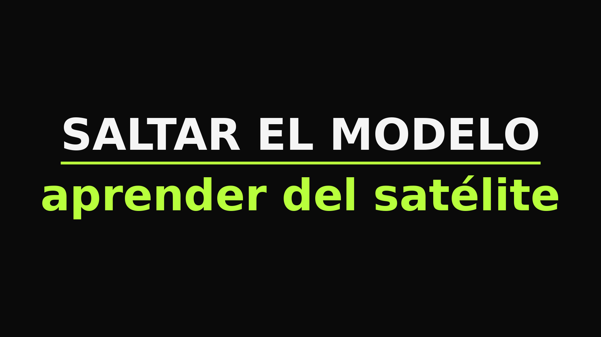
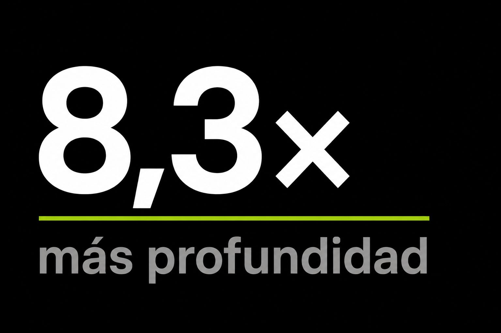
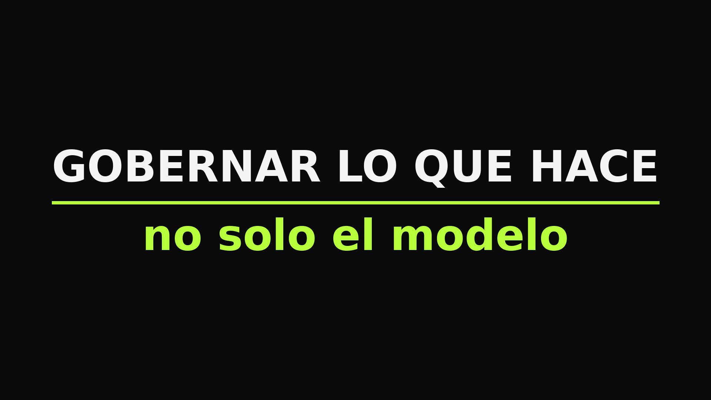
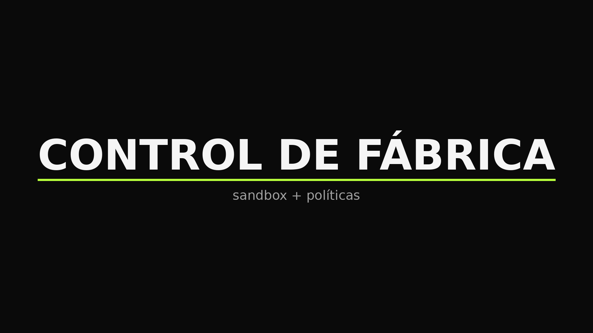
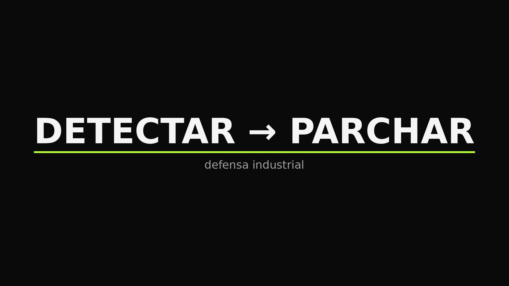
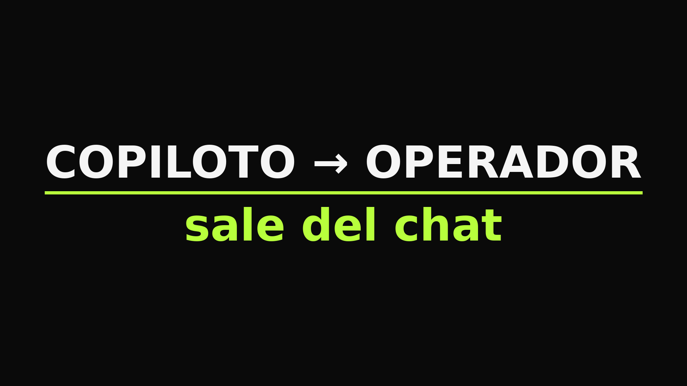
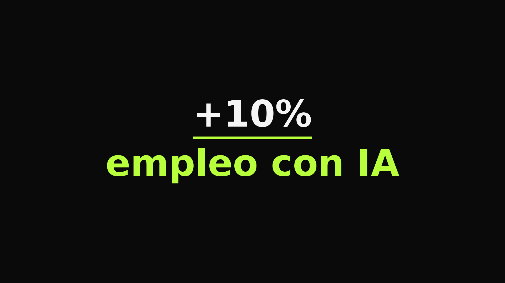
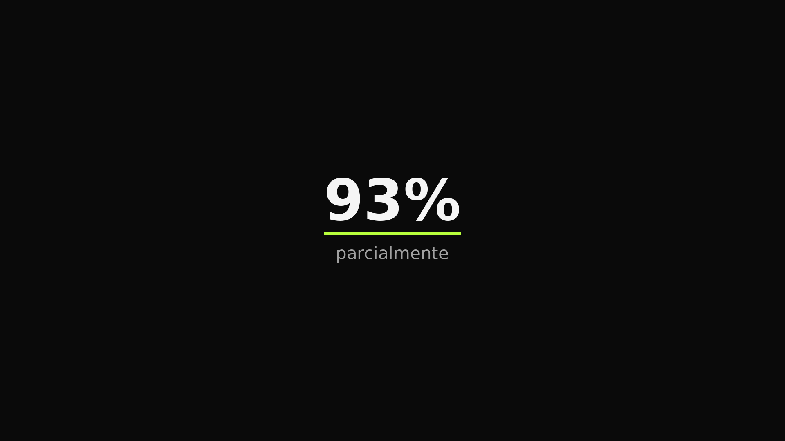
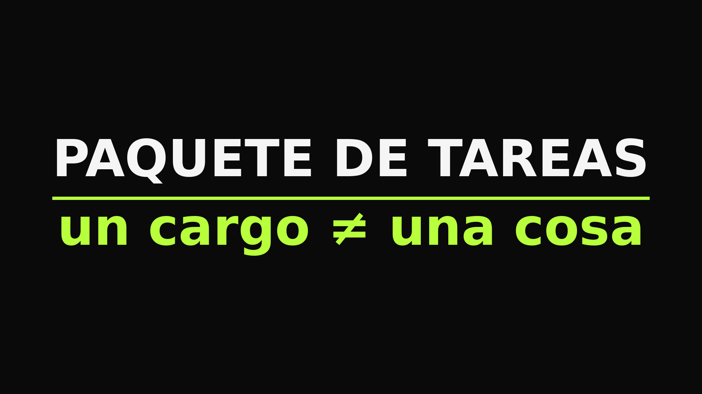
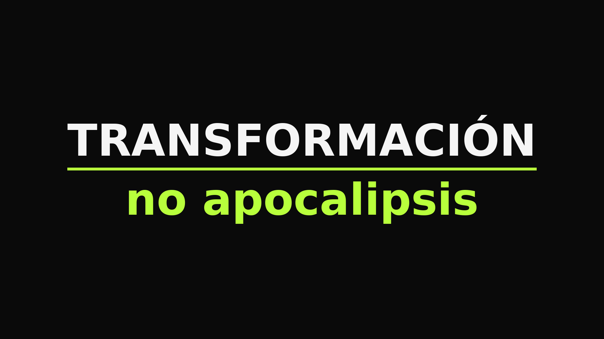

Ya no perfeccionan el modelo físico del clima.
Lo saltan.
Aprende del satélite. Predice sin una ecuación que “explique” la atmósfera.
En espera: bajamos volumen por engagement bajo; liberar 1–2/día o sacar

Ya no perfeccionan el modelo físico del clima.
Lo saltan.
Aprende del satélite. Predice sin una ecuación que “explique” la atmósfera.
En espera: bajamos volumen por engagement bajo; liberar 1–2/día o sacar

Las empresas frontera usan 8,3× más IA por persona.
Misma herramienta. Distinta profundidad.
El salto es pasarlo de asistente a ejecución.
En espera: bajamos volumen por engagement bajo; liberar 1–2/día o sacar
En enterprise, Codex ya genera más tokens que ChatGPT.
La gente dejó de preguntar. Empezó a delegar el trabajo de verdad.
En espera: bajamos volumen por engagement bajo; liberar 1–2/día o sacar

Gobernar el modelo ya no alcanza.
Hay que gobernar lo que hace.
Identidad, permisos, memoria, monitoreo en runtime.
En espera: bajamos volumen por engagement bajo; liberar 1–2/día o sacar
Antes de escalar agentes: define la ficha del cargo.
Qué herramientas toca. Qué datos ve. Quién es el dueño humano.
En espera: bajamos volumen por engagement bajo; liberar 1–2/día o sacar

Agentes autónomos con sandbox y políticas de fábrica.
En la empresa el agente escala cuando el control llega con él.
En espera: bajamos volumen por engagement bajo; liberar 1–2/día o sacar
Compartir workflows no basta. Hay que nombrar dueño, estándar y qué se mide.
Sin eso, “adopción” es gente probando sola.
Menos instrucciones suele ser más robusto.
En empresa el harness gordo es deuda: nadie lo mantiene y el agente improvisa.
Falta la 5ª en empresa: permisos.
Thing + tools + memory + share… y quién puede romper qué.

Un modelo que encuentra vulnerabilidades… y las parcha.
A velocidad Flash.
La defensa también se industrializó.
Lo útil no es que “note” trabajo extra.
Es si puede hacerlo sin approval. Autonomía sin bitácora es riesgo con cara amable.
MCP a datos internos es potencia.
El proyecto real: identidad del agente y qué sistemas puede tocar.
El desperdicio no es cómputo. Es conocimiento que la empresa ya tiene y no empaqueta.
Skills = SOPs vivos. Ahí está el ROI.
Enseñar al agente a operar software es el salto.
Falta versionar y evaluar el skill antes de soltarlo a producción.
No todo caso merece el modelo caro.
Un funnel por riesgo es transformación de verdad: costo, latencia y control en la misma decisión.
Casar modelo con proceso es el trabajo.
Finance approvals ≠ sales follow-ups. El portfolio se diseña; no se improvisa.

Claude ya puede usar tu computador en segundo plano: hace click, escribe, abre apps.
El copiloto se convierte en operador.
Sale del chat. Entra al escritorio. Ahí cambia el proceso.
Persistencia sin criterio de parada es bucle caro.
En ops: cuándo insiste, cuándo escala a humano, cuándo cierra.

Las empresas que adoptaron IA no despidieron:
el empleo creció 10% en dos años.
Eso es transformación. No recorte.
High agency es de las pocas ventajas humanas que esta era premia.
Usarla todos los días. En el trabajo real. No en un curso.

El dato que importa no es “la IA puede hacer tu trabajo”.
Es la palabra parcialmente.
93% de los empleos. El rol cambia. No desaparece.

Un cargo no es una cosa.
Es un paquete de tareas.
La IA redacta y resume. No arma confianza ni decide con incertidumbre.
La IA no te saca el cargo.
Te saca las tareas aburridas del cargo.

El cuello de botella ya no es el modelo.
Es el proceso que todavía pide 7 firmas para un cambio de 10 minutos.
La transformación empieza donde el flujo se traba, no donde el demo brilla.

No es apocalipsis de empleos.
Es transformación.
170 millones de roles nuevos. El titular asusta. El dato no.

Un agente sin dueño no es autonomía.
Es deuda operativa con latencia.
Antes de escalar: nombre, permisos, qué puede romper.
Steer el agente es la skill.
Eso se enseña en el flujo real, no en un curso suelto.
Quién sabe pedir, multiplica. Quién solo observa, se queda.
El valor no es que “haga clic”.
Es qué clic le dejamos hacer.
El riesgo no es el modelo: es permiso sin dueño.
El rollout importa menos que la gobernanza del acceso.
Primero dueño del proceso, después asiento Enterprise.
Si no, Astra acelera el desorden.

La IA barata no baja el costo del trabajo.
Baja el costo de *probar*.
Eso cambia quién puede innovar sin presupuesto de piloto.